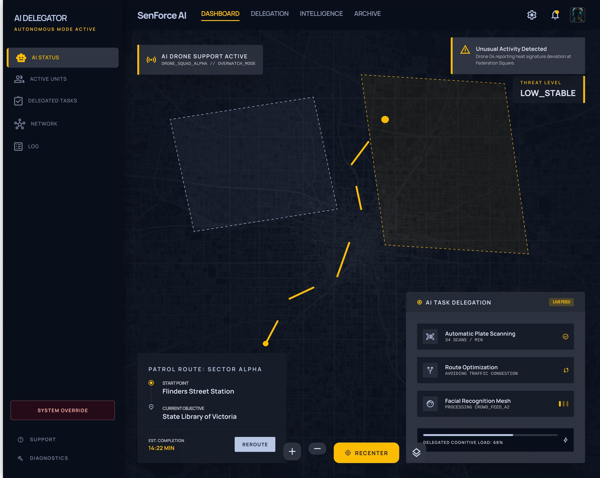
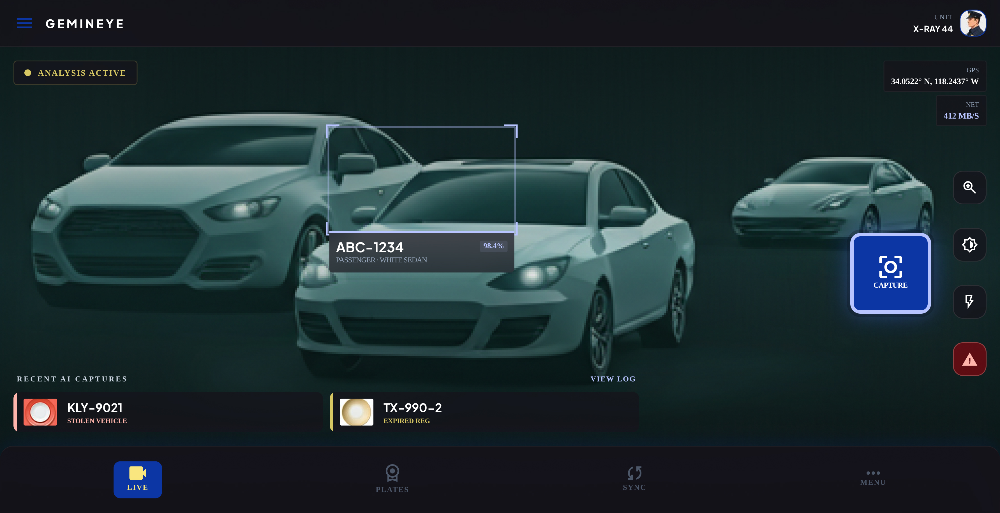
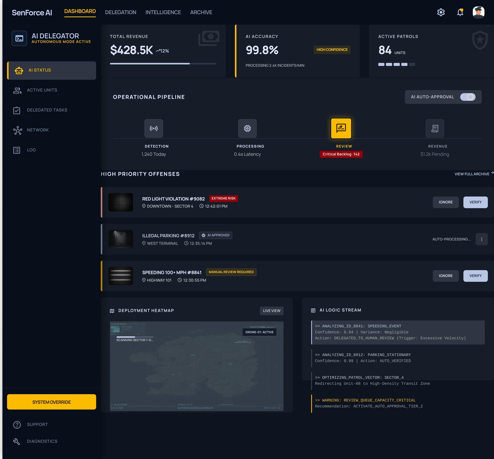
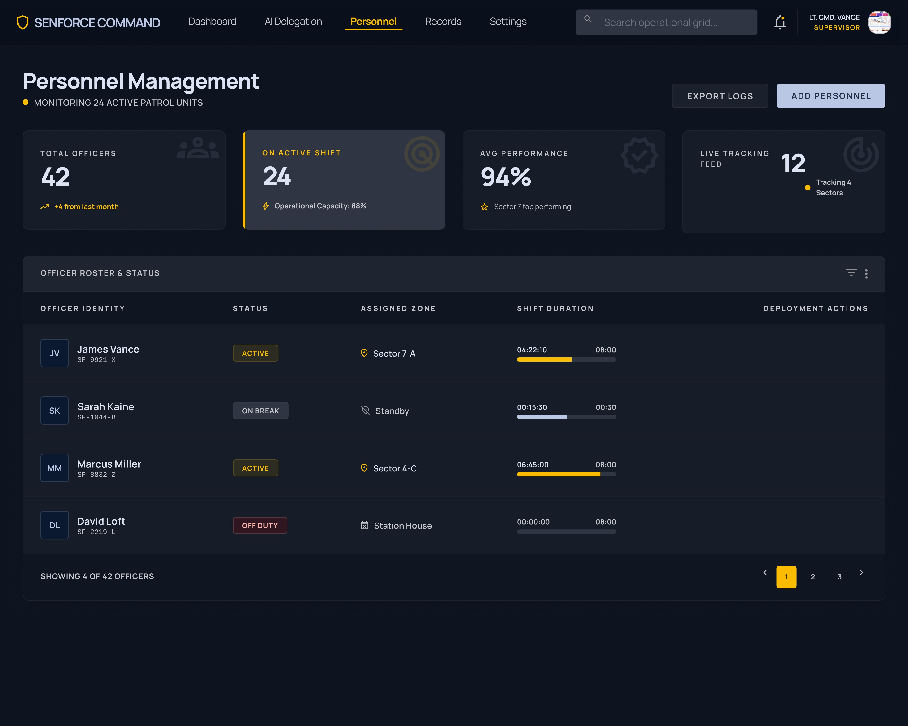
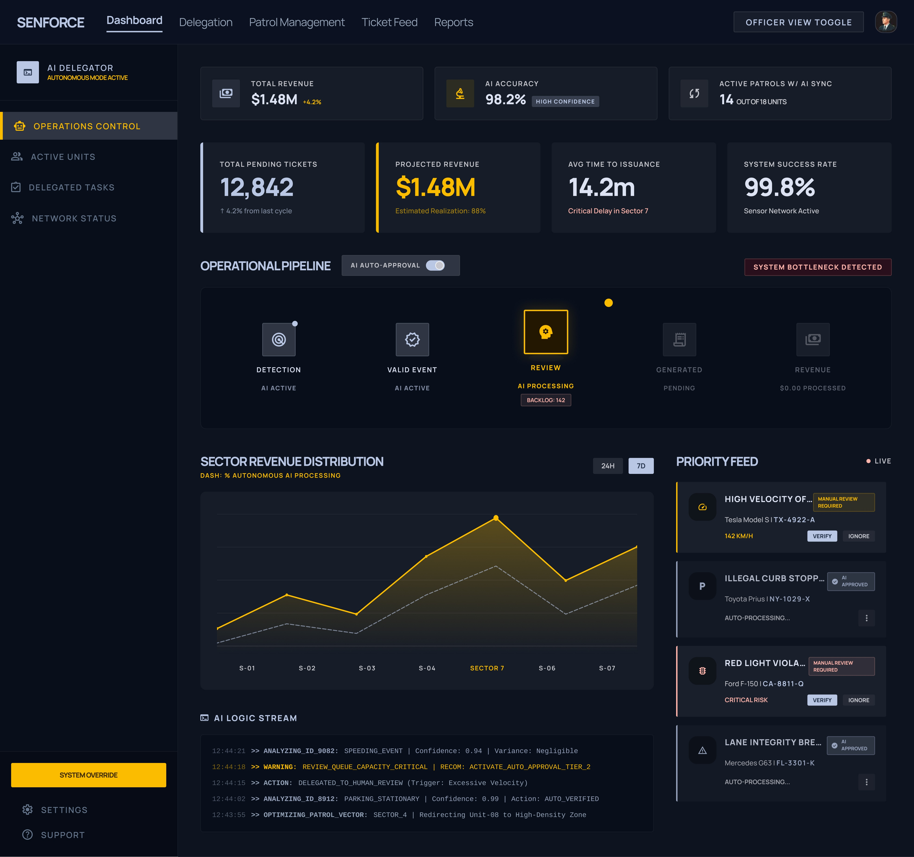
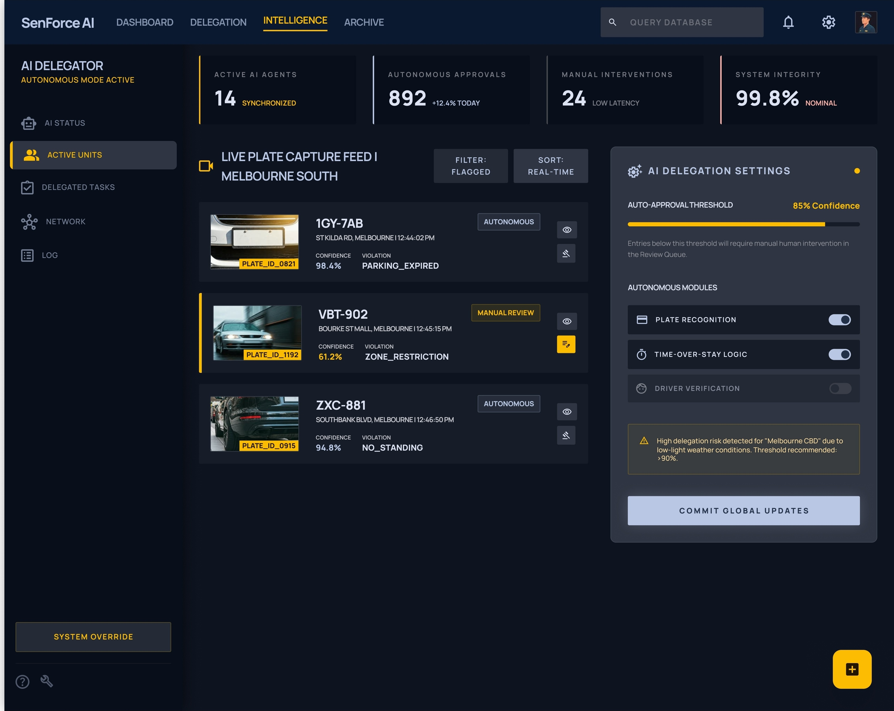

A UX case study on designing for operational continuity — so that the trail of active work never falls between the cracks of a handover.

A culture of borrowing meaning — shift handover was a vague social contract, not a system. The missing information had multiple real-world consequences and left gaps that no individual officer could close alone.
Designing for both meant understanding the distinct needs and pressures of each role before designing a single screen.
Before touching a single screen, I landed on one north star expression — a statement they all agreed on before we started, and one I returned to every time a design decision became unclear.
Design a connected system that ensures shift continuity, reduces manual effort, and gives both officers and supervisors real-time visibility into work.
A task-based platform — four components working as a connected ecosystem, ensuring flows from field to supervisor ran without interruption.

For officers in the field — fast case creation, task pickup, and clean shift handover, all from a mobile screen optimised for distracted, on-the-go use.

Fully-featured web view for senior officers — live case states, officer performance, pending resolutions, and compliance flags, all in one command surface.

Role configuration, on-boarding, and assignment mapping — so that every officer enters the system with the right view, the right permissions, and the right context from day one.

Performance management, team-level data, and compliance health — giving supervisors the evidence they need to make fair, informed decisions at review time.
One flow. Both sides of the transition — the officer going off duty, and the one coming on. Designed so that what one officer knew, the next officer inherited automatically.

The dashboard was not about more data — it was about the right data, surfaced at exactly the moment a decision needed to be made.
Officer plans and activity mapped for the current shift — so supervisors always know who's on, where they are, and what they're handling.
Open matters that need to be assigned before next shift. A dedicated queue so nothing falls through — visible to all senior officers at once.
Automatically surfaces tasks that have missed SLA thresholds, require escalation, or haven't been acknowledged within the expected time window.
Identifies workload imbalances across the team in real time — so supervisors can redistribute before officers burn out or cases stall.
Rather than patching individual handover failures, we mapped the full lifecycle of a case across a shift — so the system could surface breakage points before they became operational gaps. Every design decision started with identifying the failure first.
Mobile and web were not separate products — they were two views of the same data layer. Designing them in parallel meant every action taken on the phone had a traceable consequence on the dashboard. No orphaned records. No duplicate effort.
Field operations vary by region, shift structure, and case type. We built role-based configuration into the system from the start — so it could be deployed across different operational contexts without re-engineering the core.
The platform replaced informal workarounds with traceable, structured workflows — and the changes compounded across every level of the organisation.
All open tasks from an ending shift are automatically surfaced to the incoming officer. Follow-up is no longer a memory exercise — it's a structured handoff built into the flow.
Reduced the average case pickup time by eliminating the verbal briefing. Officers see the context of every open matter instantly, and can begin acting within seconds of coming on duty.
Every action is time-stamped, role-linked, and case-attributed. Supervisors can see exactly who did what, when — and officers can no longer fall back on "I didn't know" as an answer.
Supervisors now have a live, accurate picture of their team at any moment in a shift — not a version constructed from memory and morning briefings. Decisions became faster and fairer.
The problem was never that officers lacked tools — it was that the handover ritual had no structure. The design intervention wasn't technological; it was organisational. I learned to ask "why does this break?" before asking "what should we build?"
Designing for both the mobile-first junior officer and the dashboard-native supervisor meant constantly switching between the constraints of a 390px screen and the information density of a 1440px command view — and keeping both coherent as a single, connected system.
Stakeholders wanted features. Users wanted relief. Only the designer could hold the question of "what happens when this is running across 200 shifts simultaneously?" — and that perspective, held consistently, was what made the product durable rather than just deliverable.
Screens shown are NDA-compliant representations generated for presentation purposes.
"The best handover is the one the next officer never has to ask for."